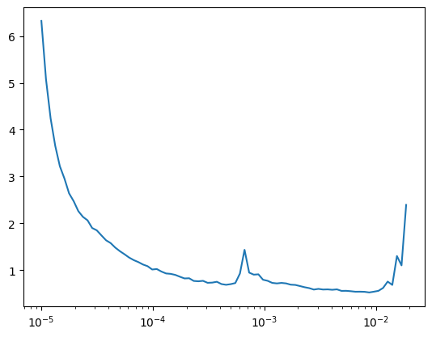
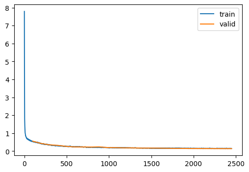
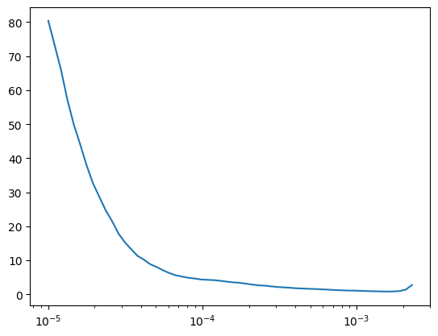
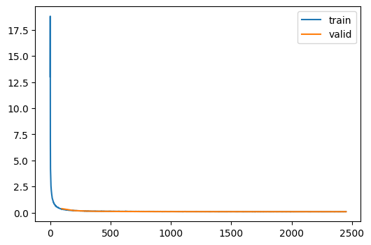
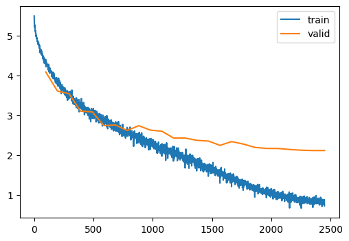
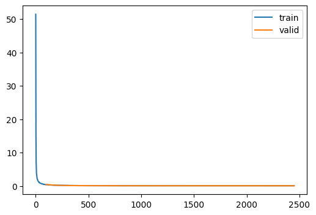
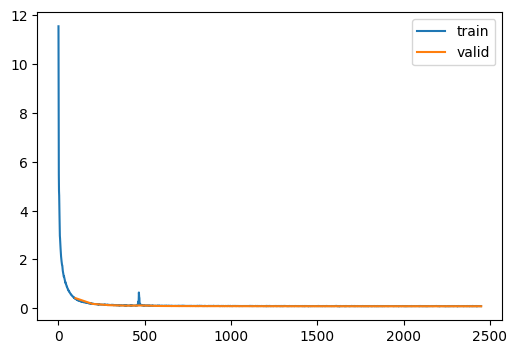
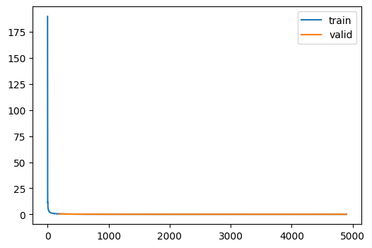

dls = get_imagenet_super_rez_dls(1024)
xb, yb = dls.peek()CPU times: user 55.2 s, sys: 8.12 s, total: 1min 3s
Wall time: 25.3 sAdapted from
The challenge of this module is to: (a) upscale a 32x32 image to a 64x64 image while (b) un-erasing randomly cropped portions of the training data.
preprocess (examples, pipe, erase)
Factory to preprocess images for training and testing
get_imagenet_super_rez_dls (bs=512)
Get the Imagenet Super resolution data
CPU times: user 55.2 s, sys: 8.12 s, total: 1min 3s
Wall time: 25.3 sFirst, let’s clean up the ResidualConvBlock. It seems that there was an issue where the original Conv helper did activation, then normalization. It seems it should be the other way around..
Here’s the shared model code.
Conv (c_in, c_out, stride=2, ks=3, **kwargs)
Convolutional neural network wrapper
ResidualConvBlock (c_in, c_out, stride=2, ks=3, with_final_activation=True)
Convolutional block with residual links without a final activation
UpsamplingResidualConvBlock (*args, **kwargs)
Conv block with an upsampling pass
KaimingMixin ()
Helper to initialize the network using Kaiming
Here’s the training code
train (model, dls, lr=0.004, n_epochs=25, extra_cbs=[<slowai.learner.MetricsCB object at 0x7faa60e4b370>], loss_fn=<function mse_loss>)
viz (xb, yb, yp, n=3)
Let’s try a few different methods to invent higher-resolution details.
Recall that we had poor results in FashionMNIST, so temper your expectations.
AutoEncoder (nfs:list[int]=(32, 64, 128, 256, 512, 1024))
Project into a hidden space and reproject into the original space

| loss | epoch | train |
|---|---|---|
| 0.845 | 0 | train |
| 0.558 | 0 | eval |
| 0.487 | 1 | train |
| 0.432 | 1 | eval |
| 0.387 | 2 | train |
| 0.354 | 2 | eval |
| 0.325 | 3 | train |
| 0.325 | 3 | eval |
| 0.286 | 4 | train |
| 0.270 | 4 | eval |
| 0.258 | 5 | train |
| 0.240 | 5 | eval |
| 0.241 | 6 | train |
| 0.236 | 6 | eval |
| 0.226 | 7 | train |
| 0.228 | 7 | eval |
| 0.216 | 8 | train |
| 0.240 | 8 | eval |
| 0.206 | 9 | train |
| 0.201 | 9 | eval |
| 0.197 | 10 | train |
| 0.196 | 10 | eval |
| 0.190 | 11 | train |
| 0.186 | 11 | eval |
| 0.183 | 12 | train |
| 0.184 | 12 | eval |
| 0.177 | 13 | train |
| 0.171 | 13 | eval |
| 0.172 | 14 | train |
| 0.170 | 14 | eval |
| 0.168 | 15 | train |
| 0.168 | 15 | eval |
| 0.164 | 16 | train |
| 0.162 | 16 | eval |
| 0.161 | 17 | train |
| 0.155 | 17 | eval |
| 0.160 | 18 | train |
| 0.154 | 18 | eval |
| 0.156 | 19 | train |
| 0.148 | 19 | eval |
| 0.154 | 20 | train |
| 0.148 | 20 | eval |
| 0.153 | 21 | train |
| 0.146 | 21 | eval |
| 0.152 | 22 | train |
| 0.144 | 22 | eval |
| 0.152 | 23 | train |
| 0.143 | 23 | eval |
| 0.151 | 24 | train |
| 0.142 | 24 | eval |

Not much better than the original.
This is nearly identical except that, for a particular up-sampling block, the logits from the same scale down-sampling are added or concatenated.
TinyUnet (nfs:list[int]=(32, 64, 128, 256, 512, 1024), n_blocks=(3, 2, 2, 1, 1))
U-net

| loss | epoch | train |
|---|---|---|
| 1.265 | 0 | train |
| 0.377 | 0 | eval |
| 0.249 | 1 | train |
| 0.196 | 1 | eval |
| 0.173 | 2 | train |
| 0.149 | 2 | eval |
| 0.142 | 3 | train |
| 0.124 | 3 | eval |
| 0.128 | 4 | train |
| 0.119 | 4 | eval |
| 0.120 | 5 | train |
| 0.107 | 5 | eval |
| 0.115 | 6 | train |
| 0.105 | 6 | eval |
| 0.110 | 7 | train |
| 0.099 | 7 | eval |
| 0.107 | 8 | train |
| 0.098 | 8 | eval |
| 0.105 | 9 | train |
| 0.097 | 9 | eval |
| 0.103 | 10 | train |
| 0.095 | 10 | eval |
| 0.102 | 11 | train |
| 0.094 | 11 | eval |
| 0.101 | 12 | train |
| 0.093 | 12 | eval |
| 0.099 | 13 | train |
| 0.092 | 13 | eval |
| 0.099 | 14 | train |
| 0.092 | 14 | eval |
| 0.098 | 15 | train |
| 0.091 | 15 | eval |
| 0.097 | 16 | train |
| 0.091 | 16 | eval |
| 0.097 | 17 | train |
| 0.090 | 17 | eval |
| 0.096 | 18 | train |
| 0.090 | 18 | eval |
| 0.096 | 19 | train |
| 0.090 | 19 | eval |
| 0.096 | 20 | train |
| 0.090 | 20 | eval |
| 0.096 | 21 | train |
| 0.089 | 21 | eval |
| 0.096 | 22 | train |
| 0.089 | 22 | eval |
| 0.096 | 23 | train |
| 0.089 | 23 | eval |
| 0.096 | 24 | train |
| 0.089 | 24 | eval |

First, let’s train a model with an identical downsampling circuit and a classification head
TinyImageResNet4 (nfs:list[int]=(32, 64, 128, 256, 512, 1024))
Convolutional classification model
m = MetricsCB(MulticlassAccuracy(num_classes=200))
clf = train(
TinyImageResNet4.kaiming(),
dls_clf,
loss_fn=F.cross_entropy,
lr=1e-2,
n_epochs=25,
extra_cbs=[m],
)| MulticlassAccuracy | loss | epoch | train |
|---|---|---|---|
| 0.064 | 4.714 | 0 | train |
| 0.133 | 4.083 | 0 | eval |
| 0.138 | 4.059 | 1 | train |
| 0.200 | 3.607 | 1 | eval |
| 0.197 | 3.648 | 2 | train |
| 0.223 | 3.540 | 2 | eval |
| 0.243 | 3.372 | 3 | train |
| 0.289 | 3.102 | 3 | eval |
| 0.284 | 3.136 | 4 | train |
| 0.292 | 3.084 | 4 | eval |
| 0.316 | 2.957 | 5 | train |
| 0.353 | 2.740 | 5 | eval |
| 0.349 | 2.783 | 6 | train |
| 0.360 | 2.755 | 6 | eval |
| 0.379 | 2.628 | 7 | train |
| 0.391 | 2.617 | 7 | eval |
| 0.404 | 2.498 | 8 | train |
| 0.376 | 2.737 | 8 | eval |
| 0.434 | 2.352 | 9 | train |
| 0.407 | 2.626 | 9 | eval |
| 0.457 | 2.234 | 10 | train |
| 0.419 | 2.598 | 10 | eval |
| 0.483 | 2.110 | 11 | train |
| 0.445 | 2.428 | 11 | eval |
| 0.509 | 1.987 | 12 | train |
| 0.455 | 2.427 | 12 | eval |
| 0.535 | 1.871 | 13 | train |
| 0.473 | 2.370 | 13 | eval |
| 0.564 | 1.730 | 14 | train |
| 0.476 | 2.352 | 14 | eval |
| 0.592 | 1.612 | 15 | train |
| 0.505 | 2.244 | 15 | eval |
| 0.624 | 1.475 | 16 | train |
| 0.496 | 2.339 | 16 | eval |
| 0.656 | 1.355 | 17 | train |
| 0.513 | 2.276 | 17 | eval |
| 0.685 | 1.230 | 18 | train |
| 0.535 | 2.194 | 18 | eval |
| 0.712 | 1.123 | 19 | train |
| 0.537 | 2.167 | 19 | eval |
| 0.737 | 1.038 | 20 | train |
| 0.551 | 2.166 | 20 | eval |
| 0.756 | 0.955 | 21 | train |
| 0.555 | 2.140 | 21 | eval |
| 0.773 | 0.897 | 22 | train |
| 0.560 | 2.123 | 22 | eval |
| 0.783 | 0.861 | 23 | train |
| 0.563 | 2.114 | 23 | eval |
| 0.788 | 0.837 | 24 | train |
| 0.564 | 2.115 | 24 | eval |

Now, we can train using these “perceptual” features
Now, we can train with this loss function
| loss | epoch | train |
|---|---|---|
| 2.163 | 0 | train |
| 0.460 | 0 | eval |
| 0.315 | 1 | train |
| 0.238 | 1 | eval |
| 0.204 | 2 | train |
| 0.169 | 2 | eval |
| 0.162 | 3 | train |
| 0.139 | 3 | eval |
| 0.141 | 4 | train |
| 0.123 | 4 | eval |
| 0.128 | 5 | train |
| 0.115 | 5 | eval |
| 0.119 | 6 | train |
| 0.107 | 6 | eval |
| 0.115 | 7 | train |
| 0.104 | 7 | eval |
| 0.111 | 8 | train |
| 0.102 | 8 | eval |
| 0.108 | 9 | train |
| 0.100 | 9 | eval |
| 0.106 | 10 | train |
| 0.098 | 10 | eval |
| 0.105 | 11 | train |
| 0.096 | 11 | eval |
| 0.103 | 12 | train |
| 0.096 | 12 | eval |
| 0.102 | 13 | train |
| 0.094 | 13 | eval |
| 0.101 | 14 | train |
| 0.094 | 14 | eval |
| 0.101 | 15 | train |
| 0.093 | 15 | eval |
| 0.100 | 16 | train |
| 0.092 | 16 | eval |
| 0.099 | 17 | train |
| 0.092 | 17 | eval |
| 0.099 | 18 | train |
| 0.092 | 18 | eval |
| 0.098 | 19 | train |
| 0.091 | 19 | eval |
| 0.098 | 20 | train |
| 0.091 | 20 | eval |
| 0.098 | 21 | train |
| 0.091 | 21 | eval |
| 0.098 | 22 | train |
| 0.091 | 22 | eval |
| 0.098 | 23 | train |
| 0.091 | 23 | eval |
| 0.098 | 24 | train |
| 0.091 | 24 | eval |

And, finally, train with the same features from the classifier in the downsampler path
initialize_unet_weights_with_clf_weights (c, unet)
unpp = train(
initialize_unet_weights_with_clf_weights(clf, TinyUnet.kaiming()),
dls,
loss_fn=custom_loss,
)| loss | epoch | train |
|---|---|---|
| 1.419 | 0 | train |
| 0.420 | 0 | eval |
| 0.266 | 1 | train |
| 0.183 | 1 | eval |
| 0.159 | 2 | train |
| 0.130 | 2 | eval |
| 0.130 | 3 | train |
| 0.110 | 3 | eval |
| 0.146 | 4 | train |
| 0.117 | 4 | eval |
| 0.110 | 5 | train |
| 0.097 | 5 | eval |
| 0.103 | 6 | train |
| 0.093 | 6 | eval |
| 0.100 | 7 | train |
| 0.091 | 7 | eval |
| 0.098 | 8 | train |
| 0.090 | 8 | eval |
| 0.096 | 9 | train |
| 0.089 | 9 | eval |
| 0.096 | 10 | train |
| 0.088 | 10 | eval |
| 0.095 | 11 | train |
| 0.088 | 11 | eval |
| 0.094 | 12 | train |
| 0.087 | 12 | eval |
| 0.093 | 13 | train |
| 0.087 | 13 | eval |
| 0.093 | 14 | train |
| 0.086 | 14 | eval |
| 0.093 | 15 | train |
| 0.086 | 15 | eval |
| 0.092 | 16 | train |
| 0.086 | 16 | eval |
| 0.092 | 17 | train |
| 0.086 | 17 | eval |
| 0.092 | 18 | train |
| 0.086 | 18 | eval |
| 0.092 | 19 | train |
| 0.085 | 19 | eval |
| 0.091 | 20 | train |
| 0.085 | 20 | eval |
| 0.091 | 21 | train |
| 0.085 | 21 | eval |
| 0.091 | 22 | train |
| 0.085 | 22 | eval |
| 0.091 | 23 | train |
| 0.085 | 23 | eval |
| 0.091 | 24 | train |
| 0.085 | 24 | eval |

TinyUnetWithCrossConvolutions (nfs:list[int]=(32, 64, 128, 256, 512, 1024), n_blocks=(3, 2, 2, 1, 1))
U-net
| loss | epoch | train |
|---|---|---|
| 2.813 | 0 | train |
| 0.484 | 0 | eval |
| 0.325 | 1 | train |
| 0.239 | 1 | eval |
| 0.201 | 2 | train |
| 0.177 | 2 | eval |
| 0.156 | 3 | train |
| 0.130 | 3 | eval |
| 0.134 | 4 | train |
| 0.116 | 4 | eval |
| 0.122 | 5 | train |
| 0.109 | 5 | eval |
| 0.115 | 6 | train |
| 0.103 | 6 | eval |
| 0.109 | 7 | train |
| 0.098 | 7 | eval |
| 0.105 | 8 | train |
| 0.095 | 8 | eval |
| 0.102 | 9 | train |
| 0.093 | 9 | eval |
| 0.100 | 10 | train |
| 0.092 | 10 | eval |
| 0.098 | 11 | train |
| 0.091 | 11 | eval |
| 0.097 | 12 | train |
| 0.090 | 12 | eval |
| 0.096 | 13 | train |
| 0.089 | 13 | eval |
| 0.095 | 14 | train |
| 0.088 | 14 | eval |
| 0.094 | 15 | train |
| 0.088 | 15 | eval |
| 0.093 | 16 | train |
| 0.087 | 16 | eval |
| 0.093 | 17 | train |
| 0.087 | 17 | eval |
| 0.093 | 18 | train |
| 0.086 | 18 | eval |
| 0.093 | 19 | train |
| 0.086 | 19 | eval |
| 0.092 | 20 | train |
| 0.086 | 20 | eval |
| 0.092 | 21 | train |
| 0.086 | 21 | eval |
| 0.092 | 22 | train |
| 0.086 | 22 | eval |
| 0.092 | 23 | train |
| 0.086 | 23 | eval |
| 0.092 | 24 | train |
| 0.086 | 24 | eval |

Compare to 0.089 for the comparable U-net with MSE loss.